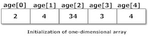

Arrays
An array is an ordered collection of elements of the same type. It can store only a fixed number of elements. The length of an array is established when the array is created. Arrays allow you to group and processing similar data together. In the following picture, an array of five floating-point elements is presented.

An array of five int elements
Some features:
- an array is a reference type;
- all elements are stored in the memory sequentially ;
- each element of an array is accessed by its numerical index, the first element has the index 0;
- the last element is accessed by the index equal to array size - 1;
- it's possible to create an array of any types;
- the maximum size of an array is limited by the Integer.MAX_VALUE;
1st Step: Declaration, instantiation, initialization
To create an array filled with useful elements we should:
- declare a variable of an array type (declaration);
- create an instance of the array object (instantiation);
- initialize the array by some values (initialization).
Declaration
To declare an array we must use two special characters [] after the name of the type of elements in the array:
int[] array; // declaration
```
or after the name of an array variable:
```java
int array[]; // declaration
Creating an array with the specified elements
Java provides several ways to create an array. The simplest way to instantiate and initialize an array is to enumerate all its elements:
int[] numbers = { 1, 2, 3, 4 }; // an array of 1, 2, 3, 4
But, this way to create an array has some disadvantages: we need to know values and number of elements at the moment of compilation.
Another way is to initialize an array using variables:
int a = ..., b = ..., c = ...;
int[] numbers = { a, b, c };
In this case, we should have all elements at the moment of the array creation.
Creating an array using the keyword "new"
The most general way to create an instance (object) of an array is to use the special keyword new and specify the necessary number of elements:
int n = ...; // n is a length of an array
int[] numbers = new int[n];
Now, the array has n elements. Each element is equal to 0 (the default value). Next, we should make explicit initialization of elements. It's possible to separate declaration and instantiation in two lines:
int[] numbers;
numbers = new int[n];
Also, we can write the keyword new and enumerate all elements of an array:
float[] floatNumbers; // declaration
floatNumbers = new float[] { 1.02f, 0.03f, 4f } // instantiation and initialization
Where to place []?
Another feature associated with the creating of arrays is the location of characters [].
char[] chars1 = new char[n]; // [] after the type
char chars2[] = new char[n]; // [] after the variable
Often, Java developers use the first way because it signals that an array is a special type.
The length of an array
To obtain the length of an existing array we should write arrayName.length. It returns the length of the array. Here is an example:
int[] array = { 1, 2, 3, 4 }; // an array of numbers
int length = array.length; // number of elements of the array
System.out.println(length); // 4
2nd Step: Access
Specific element by index
The values of elements of an array can be changed. To set (get) a value to (from) array the index is used. Set the value by the index:
array[index] = val;
Get the value by the index
val = array[index];
Indexes of an array have numbers from 0 to length - 1 inclusive. Let's see an example.
int numbers[] = new int[3]; // numbers: [0, 0, 0]
numbers[0] = 1; // numbers: [1, 0, 0]
numbers[1] = 2; // numbers: [1, 2, 0]
numbers[2] = numbers[0] + numbers[1]; // numbers: [1, 2, 3]
Some explanations:
- in the first line, the integer array named numbers with the size 3 is created. By default, all elements are equal to 0;
- in the second line, the value "1" is assigned to the first element of the array by its index (do not forget, the first element has the index 0);
- in the third line, the value "2" is assigned to the second element of the array by its index (numbers[1] - is the second element);
- in the last line, the sum of first two elements is assigned to the third element by its index. Note, if we try to access a non-existing element by an index then a runtime exception happens. For instance, let's try to get fourth element (with index 3) of the considered array numbers.
int elem = numbers[3];
The program throws ArrayIndexOutOfBoundsException. Be careful with indexes when accessing elements of an array.
All elements by loops
Often, it's needed to perform some kind of algorithms on the elements of an array. For instances: sort them, find the maximum element, print only positive numbers, reverse the order, calculate the arithmetic average of numbers and so on. A convenient way to process an array is to iterate over the array using a loop. The property length of an array can help us to avoid ArrayIndexOutOfBoundsException. Example 1. Filling an array with the squares of indexes.
int n = 10; // the size of an array
int[] squares = new int[n]; // creating an array with the specified size
System.out.println(Arrays.toString(squares)); // [0, 0, 0, 0, 0, 0, 0, 0, 0, 0]
/* iterating over the array */
for (int i = 0; i < squares.length; i++) {
squares[i] = i * i; // set the value by the element index
}
System.out.println(Arrays.toString(squares)); // [0, 1, 4, 9, 16, 25, 36, 49, 64, 81]
Some explanations. In the code above an array with the size 10 is created (filled with 0). Then each element of the array is set to the square of the element's index. Then the array is output to the standard output. Example 2. Checking the order of elements. The following program checks the given array is sorted ascending and prints "OK", otherwise it prints "BROKEN".
int[] numbers = { 1, 2, 3, 4, 5, 10, 6 }; // the order is broken
boolean broken = false; // suppose the array is well-ordered
/* iterating over the array */
for (int i = 1; i < numbers.length; i++) {
if (numbers[i] < numbers[i - 1]) { // if the order is broken
broken = true; // write a result
break; // terminate the loop
}
}
System.out.println(broken ? "BROKEN" : "OK");
For the given array the program prints "BROKEN". To iterate over arrays while and do-while loops are also admissible, but they are used less often.
Alternative: For-each loop
Since Java 5 there is a special kind of the for loop called for-each. It is a special kind of the for-loop that iterates arrays and collections (they will be learned in other topics) without using indexes. Let's write a code for calculating the number of 'a' letter in the given character array. To iterate over the array we'll use for-each loop.
char[] characters = { 'a', 'b', 'c', 'a', 'b', 'c', 'a' };
int counter = 0;
for (char ch : characters) {
if (ch == 'a') {
counter++;
}
}
System.out.println(counter); // it outputs "3"
As you can see, the absence of indexes makes the code more readable. It also allows you to avoid ArrayIndexOutOfBoundsException.
Class Arrays
The class provides a lot of very useful methods for processing arrays. convert array to string using Arrays.toString(...) and then print it:
byte[] famousNumbers = { 0, 1, 2, 4, 8, 16, 32, 64 };
System.out.println(Arrays.toString(famousNumbers)); // it prints [0, 1, 2, 4, 8, 16, 32, 64]
sorting a whole array or a part of it:
long[] bigNumbers = { 20000000000L, 40000000000L, 10000000000L, 30000000000L }; // it's unsorted
Arrays.sort(bigNumbers); // sorting whole array
// it prints [10000000000, 20000000000, 30000000000, 40000000000]
System.out.println(Arrays.toString(bigNumbers));
comparing arrays: two arrays are equal if they contain the same elements in the same order:
```java
int[] numbers1 = { 1, 2, 5, 8 };
int[] numbers2 = { 1, 2, 5 };
int[] numbers3 = { 1, 2, 5, 8 };
System.out.println(Arrays.equals(numbers1, numbers2)); // it prints "false"
System.out.println(Arrays.equals(numbers1, numbers3)); // it prints "true"
filling a whole array or a part of it by some values:
int size = 10;
char[] characters = new char[size];
// It takes an array, start index, end index (exclusive) and the value for filling the array
Arrays.fill(characters, 0, size / 2, 'A');
Arrays.fill(characters, size / 2, size, 'B');
System.out.println(Arrays.toString(characters)); // it prints [A, A, A, A, A, B, B, B, B, B]
Of course, the class contains a lot of other useful methods, including array copying, binary search in sorted array and so on. For details see here
Samples
Example 1
public class Main {
public static void main(String[] args) {
int[] array = { 1, 2, 3, 4 };
int length = array.length;
System.out.println(length);
System.out.println(array[2]);
}
}
Example 2
import java.util.Scanner;
import java.util.Arrays;
public class ReadingArrayExample {
public static void main(String args[]) {
Scanner scanner = new Scanner(System.in);
int len = scanner.nextInt(); // reading a length
int[] array = new int[len]; // creating an array with the specified length
for (int i = 0; i < len; i++) {
array[i] = scanner.nextInt(); // read the next number of the array
}
System.out.println(Arrays.toString(array)); // output the array
}
}
Example 3
import java.util.Arrays;
public class WritingArrayExample {
public static void main(String[] args) {
int[] llista = {1,2,3};
String[] llista2 = {"correr", "menjar"};
//Option 1: for-each
for (int i : llista) {
System.out.print(i + " ");
}
System.out.println();
//Option 2: toString de la classe Arrays)
System.out.println(Arrays.toString(llista));
//Option 3: classic for
for (int i = 0; i < llista.length; i++) {
System.out.print(llista[i] + " ");
}
System.out.println();
}
}
Example 4
import java.util.Scanner;
public class Main {
public static void main(String[] args) {
Scanner scan = new Scanner(System.in);
System.out.println("Enter number of students:");
int n = scan.nextInt();
int[] marks = new int[n];
int sum=0;
for(int i=0; i < n; i++){
System.out.println("Enter marks of student " + (i+1) +":");
marks[i] = scan.nextInt();
sum+=marks[i];
}
System.out.println("Mitjana : " + (float)sum/n);
}
}